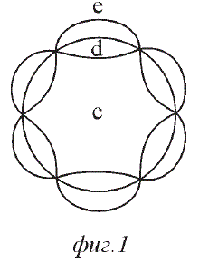

Беседа 873 от 3877 · Беинса Дуно
Смяна на състоянията
Двадесет и осма лекция
28 юни 1925 г.
Доброта, Истина, Красота – това е Любовта.
Прочете се резюме от темите „Ролята на положителните и отрицателните сили в Природата“.
За следния път ще пишете върху темата Произход на песимизма(№23).
След нея ще пишете върху темата Обезсърчение на младите (№24).
Как мислите, от какво се обезсърчават младите? Старият човек се обезсърчава, когато забележи, че силите му го напускат, изоставят го. Питам тогава: защо и младият човек, който е в разцвета на силите си, се обезсърчава? Помислете добре върху този въпрос и тогава пишете.

Да допуснем, че някое същество, някой човек например се намира в едно Божествено състояние. Това негово състояние е равно, навсякъде е гладко и може да се изобрази с формата на един кръг – С. Такъв човек има мир, спокойствие, идеен живот, стремеж към Бога. Не се минава много време и този човек се отклонява от Бога, изгубва своя стремеж към идеен живот и състоянието му вече се изменя. В него стават пертурбации вследствие на зародилите се чувства на злоба, омраза, завист и т.н. Тия пертурбации са причина за огъването и изпъкването на окръжностите d и e. Каквото и да се говори на такъв човек, той е все на противоположно мнение. До вчера е намирал, че светът е хармоничен, че между хората има любов, а днес отказва това. Кои са дълбоките причини, които са заставили този човек да говори и да мисли вече по такъв начин? – Това се дължи на пертурбациите, които стават в неговото сърце.
И сега, за да се уверите в истинността на това твърдение, вие може да направите един малък психологически опит. Дайте например една хубава ябълка на някое дете и след малко я вземете от него. Какво става в сърцето на това дете? – Когато му давате ябълката, то се радва, но щом я вземете назад, в сърцето му става една пертурбация и гледате – това дете вече не е разположено. Трябва ли да стават такива пертурбации в сърцето на когото и да е? Ако детето беше разумно, щеше да каже: „Тази ябълка не беше моя. Еди-кой си господин ми я даде и аз се радвам за това. После той си я взе – и за това трябва да му благодаря, няма защо да се наскърбявам.“ Такива състояния се срещат и у възрастните хора. Понякога на човека се отнемат някои неща, за които той може да е съзнавал, а може и да не е съзнавал, че не са негови, и той започва да страда, става недоволен, неразположен. Разумният живот седи в това именно: винаги да съзнавате, че когато ви се отнема една ябълка, тя не е била ваша, и да не се смущавате.
Ще ви дам още един пример. Някой млад поет напише едно стихотворение от три-четири куплета и се радва, пази го, крие го в себе си. Обаче един ден той го изпраща в някоя редакция да се напечата и там то потъва нейде в коша на захвърлените писма и изчезва. Този поет е вече неразположен, недоволен. Защо? – Отнеха му радостта. Какво може да възпее един млад поет?
Отговор: Любовта.
Той виждал ли е Любовта? Не я е виждал, но все пак нещо го подтиква да пише. Тъй както гладът ни кара да ядем, жаждата – да пием, нуждата от сън – да спим, така и нещо ни подтиква да пишем, да четем и да учим. Ние не сме абсолютно свободни. Например дойде сънното състояние върху вас, налегне ви сън и вие заспивате. Преди да дойде сънят, вие казвате: „Никой не може да ме застави да направя това или онова – аз съм свободен човек.“ Дойде ли обаче сънят, вие не можете да му се противопоставите, лягате на леглото си и спите шест-седем часа. Сънното състояние у човека е резултат на неговите чувства, а не на мислите му. Чувствата приспиват човека. И когато паметта и мисълта на хората отслабват, чувствата са причина за това. Когато чувствата идват отвън, те са силен стимул за човешката мисъл, но когато идват отвътре, те спират мисълта на човека и той става на каша, всичко в него се разслабва. Забележете: у всички хора, които са слабоумни, чувствата вземат надмощие. Те са причина за слабостта в ума, за слабата памет на човека. Волята на такива хора се проявява под влиянието на чувствата. При това положение чувствата завличат волята много далече, там, дето човек не е искал да отива. Новата психология казва, че чувствата са независими от волята.
Ще ви задам въпроса: на какво се дължи свободата? Или: кой човек може да бъде свободен? – Свободата почива на един естествен закон. За да разберете какъв е този закон, ще ви представя следната аналогия. Ще уподобя човека на мехур, пълен с въздух. Ако на този мехур се закачи едно парче желязо с тежест сто килограма, какво ще стане с този мехур? Свободен ли е сега този мехур да се движи във въздуха като по-рано? – Не, той ще потъне надолу, ще падне. И сега този мехур като съзнателно същество мисли, разсъждава, казва: „Аз съм свободен, нищо не ме засяга, нищо не може да ме свали долу.“ Питам: защо сега слизаш надолу? – Не мога, някаква тежест е закачена на мен, нещо ме тегли надолу. Казвам: тежестта, която тегли човека надолу – това са неговите желания. И затова, щом човек се освободи от желанията, които го теглят надолу, той излиза на повърхността, както мехурът, пълен с въздух. Докато умът на човека работи, той е свободен; дойдат ли желанията у човека, той става роб на тия свои желания: не може вече правилно да мисли, изгубва всякаква свобода. Човек може да бъде свободен само при една чиста, права мисъл. Значи свободната воля се проявява в най-рядката среда. Ако затворите един светилник в дебела, желязна обвивка, ще може ли той да прояви светлината си навън? – Не може. Естественият закон, при който човек може да добие свободата си, е законът на правата, на чистата мисъл.
Казвам: хората не трябва да се спъват от своите човешки чувства. И те съставляват една велика сила, чиито качества трябва да познавате. Човешките чувства не са постоянни, те не траят дълго време. Щом попаднете под влиянието на някое човешко чувство, то може да ви владее час, два, може да ви владее ден, два, три или повече, а някога по няколко месеца или една година, и след това ще ви напусне. Напусне ли ви, вие сте вече свободен. В това време вашият ум работи правилно и вие извличате една опитност от чувството, което беше ви завладяло. След това ще попаднете на друго чувство, което непременно ще бъде по-възвишено от първото. Чувствата трябва да бъдат в хармония с мислите. Не са ли в хармония, вземат ли надмощие над мислите у човека, той не може да мисли право. След това мислите в този човек ще вземат надмощие и той постоянно ще се намира в неустойчиви състояния. И тъй, трябва да знаете, че чувствата всякога заробват човека. За да се освободи човек от това робство, той трябва съзнателно да работи върху себе си. Чувствата представляват енергия, събрана от хиляди години в Природата. У кого ще попаднат тия енергии – за това Природата не се интересува. Важното е тия енергии да се пласират някъде и да се използват разумно. Когато някой човек попадне под влиянието на един или на друг род от тези енергии, Природата ги туря на гърба му и казва: „Днес ти ще използваш тия енергии, докато намеря друг, на когото да ги стоваря.“ С това Природата прави ред опити, от които и вие се учите. Има ли нещо лошо в тия опити? Трябва ли да се сърдите на Природата за това? Колкото и да се сърдите, тя не обръща внимание. Има ли нещо лошо, ако майката даде една ябълка на своето дете и после я вземе назад? „На детето му става мъчно“, казвате вие. Това не значи нищо. Ние сме децата, на които Природата дава нещо, което обичаме, и после го взема назад.
Скръбта у човека се дължи на това, че му вземат предмета, който обича; радостта пък се дължи на това, че му дават нещо, което обича. Например вие имате малко, пет-шест-годишно братче, което е мъдро и много интелигентно. Вие му се радвате, обичате го. Един ден обаче Природата го взема. Това ви създава големи страдания, голяма скръб и запитвате: „Защо трябваше да ни дадат това дете, щом си замина тъй скоро?“ – Това дете трябваше да дойде на Земята и скоро след това да си замине, за да можете вие чрез страданията си за него да се повдигнете в по-висок свят. Като мислите за него, вие се качвате на по-високо стъпало, отивате там, дето е то.
Казвам: който не иска да потъва в дълбочините на морето, ще държи желанията си вън от себе си, без да се свързва с тях, и така ще ги разглежда. Ако някой завърже на крака ви една торбичка със сто килограма злато и ви пусне в морето, от тежестта вие ще потънете на дъното. Знаят ли хората, че на крака ви има закачена торбичка със сто килограма злато, десет водолази ще се спуснат да ви търсят из морето, да вземат торбичката със злато, а вас да спасят. Вземат ли златото, вие ще бъдете свободен и като мехур ще излезете на повърхността на водата. Тия ваши желания са външни, положителни, и се намират вън от кръга С (Фигура 1), а вътрешните желания са отрицателни, негативни, и се намират в кръга С. Негативните желания произвеждат недоволство в човека или от самия него, или от окръжаващата среда, и затова той не може да работи. За да се освободи от недоволството и за да придобие подтик, сила да работи, той трябва да премине в положителните желания, дето ще може да се развива. При недоволството човек потъва в гъста материя, дето и желанията му се усилват повече. Сами по себе си обаче отрицателните желания се сменят с положителни, защото и те излизат извън Божествения кръг С и се превръщат в положителни. Затова човек трябва да учи търпението. Дойде ли ви някое тежко състояние на гняв, недоволство или друго нещо, въоръжете се с търпение. Няма да минат пет-десет-петнадесет-двадесет минути или най-много половин час, и вашето състояние ще се смени. Недоволният човек със своето нетърпение иска да измени вътрешния ред в Природата, вследствие на което тя го улавя и го поставя вътре в кръга, в по-ограничителни условия. Този кръг тогава става по-широк, с повече отрицателни желания. Опита ли се човек и втори път да реагира срещу Разумната Природа, тя го туря пак в кръга С, който става още по-голям. Ето защо човек трябва да се научи да търпи, за да може недоволството само по себе си да се смени с доволство. Вие мислите, че ако не се борите, отрицателните ви състояния ще траят цял живот. – Не, както положителните, тъй и отрицателните състояния у човека се сменят, не траят дълго време.
Сега, като минавате през допирните точки на идеалния кръг С, по този начин вие ще изучите и законите, по които се движи този кръг. С такива кръгове (е и d) се обясняват и законите на музиката. Тия преплетени кръгове в музиката обясняват издигането и понижаването на тоновете. Значи с тия кръгове човек едновременно ще изучава както идейните чувства, така и понижаването и издигането на тоновете.
Казвам: от младите сега се изисква търпение, а не индиферентност. Младият не трябва да се смущава, но да е уверен, че всички състояния у човека могат лесно да се сменят. Вие можете математически да изчислите след колко време точно едно лошо състояние ще се смени в добро. Колкото по-интензивно е страданието, недоволството и съмнението у човека, толкова по-скоро то ще се смени. Казват за някого: „Този човек има голяма вяра.“ Наскоро обаче той изпада в безверие. Значи той има вярвания, а не вяра. И затова колкото повече и по-интензивни вярвания има човек, толкова по-скоро ще изпадне в безверие. На всички съвременни хора е необходима абсолютна, положителна вяра, защото минават през фазата на постоянните смени. У младите хора страданията са по-кратковременни, защото радостта взема надмощие у тях. Затова младите хора бързо и лесно се лекуват. Често у старите хора вътрешните кръгове траят по-дълго време. Понякога те изкуствено създават тия кръгове, понеже желанията им са силни. Ако се случи някой стар човек да е свободен от негативни чувства, той се пренася в своите положителни чувства на миналото и с тях живее. Положителните чувства на младите са насочени към бъдещето. От това не се ползват нито младите, нито старите. Закон е: положителните и отрицателните чувства трябва да присъстват едновременно в живота на човека. Животът на човека представлява кръг, по окръжността на който се преплитат положителни и отрицателни чувства и желания (Фигура 1).
Човек може да изчисли математически колко време ще трае известно негово желание, като вземе предвид известни данни, а именно: дължината на двата диаметъра на повърхността на лоба, широчината и височината на челото, дължината на носа и широчината на брадата. Понеже формата на главата у човека постоянно се мени, съобразно с това се менят трайността и интензивността на желанията. Като казвам, че формата на главата се мени, подразбирам, че това става през разните фази на живота. Който се занимава с френология, както и с изучаване на черепа на човека, ще забележи, че в тия места от черепа, дето мисълта се проявява най-активно, там костта е най-тънка. Интензивният живот на човека обаче не се проявява всякога в една и съща област на черепа. Това показва, че деятелността на човешката мисъл се сменя през разните фази на човешкия живот. Например, ако някой човек е разрушителен, главата при ушите му е широка. Такъв човек, като се разгневи, не се успокоява лесно. Ако главата на някой човек е дълга, а при ушите е тясна, той не се гневи много и гневът му скоро минава. Желанията на човека са динамически сили, скрити в неговото подсъзнание, които след време се изразяват като чувство или като мисъл. Всяко желание трябва да се впрегне на работа. Затова, като ви дойдат някои страдания или радости, наблюдавайте се спокойно и се самоизучавайте!
Един стар свещеник, около шестдесет-шестдесет и пет годишен, ми разправяше следната своя опитност: „В първите години на живота си аз не обичах страданията и по всякакъв начин се стараех да ги избягвам. Обаче каквото и да правех, ставаше точно обратното: страданията все повече и повече се увеличаваха. Най-после аз си казах: слушай, приятелю, какво си видял ти, че бягаш от страданията? Отсега нататък ще дойдат истинските страдания! Приготви се да ги приемеш с радост и да ги носиш мъжки! От този момент аз обикнах страданията, но те взеха да се отдалечават от мене. Докато ги избягвах, те ме преследваха; щом престанах да ги избягвам, те ме напуснаха.“ Питам: какво лошо има в това, да страда човек? Какво лошо има в това, че някой ви казал някоя обидна дума? Защо трябва да страдате от това? Или защо трябва да се радвате, когато някой каже, че много ви обича, че е готов да даде живота си за вас? Кое е по-реално в тия два случая: обидните думи, които ви е казал някой – че ви мрази, или пък думите на този, който казва, че ви обича? И в двата случая вие чувате само думи. Едно е важно за вас, че при тия случаи вие проверявате следния важен закон за уравновесяване на енергиите в Природата: когато някой ви мрази, Разумната Природа ще изпрати друг, който ви обича; и обратно: когато някой ви обича, Разумната Природа ще изпрати друг, който ви мрази. Каже ли ви някой, че ви мрази, кажете си: „Аз се радвам за това, защото сега ще дойде този, който ме обича.“ Каже ли ви някой, че ви обича, ще знаете, че след малко непременно ще дойде този, който ви мрази. Същото нещо се отнася и до другите области на живота и науката. Например някой поет напише едно хубаво, идейно стихотворение, което всички харесват. Второто стихотворение непременно ще бъде лошо, без идея, което само опетнява ума на този поет, без да му придава нещо.
Сега от всичко казано дотук у вас трябва да остане един основен закон, с който да противодействате на отрицателните желания и чувства, които се зараждат у вас. Не е достатъчно само да им противодействате, но трябва да издържате на тях; не е достатъчно само да издържате, но вашата мисъл трябва да расте и да се развива; при това не трябва само мисълта ви да се развива, но и душата ви да се разширява, а Духът ви да укрепва – само така ще имате прояви на истински човек. Мнозина казват: „Ние сме млади още – като остареем, тогава ще мислим за тия работи.“ – Не, ако вие не поумнеете като млади, и като стари няма да поумнеете. Който е умен като млад, и като стар ще бъде умен. Тогава човек се намира на положителната страна в своя живот. Ако някой човек е глупав като млад, и на старини ще бъде глупав. Той се намира на негативната страна в своя живот.
Често младите обичат да отлагат нещата. Например дойде ви някоя добра мисъл, да направите нещо, и вие казвате: „Това нещо не мога да го направя сега.“ Питам: на какво основание се надяваш да го направиш друг път? – „Не зная, така мисля.“ – Тогава мисли, че сега ще можеш да го направиш, и се заеми с тази работа. Когато казвате, че нещо е невъзможно, това подразбира, че вие искате да го направите съвършено, и то изведнъж, а това именно е невъзможно. Например възможно ли е за човека да изживее наведнъж всички свои състояния от детинството си до стогодишната си възраст? – Това нещо е невъзможно. Колкото и да си го представяте като допустимо, според сегашните закони на Космоса то е невъзможно. Това е въпрос на времето. Засега на всинца ви предстои да изучавате закона за смяна на вашите състояния, а един ден, като станете вещи, учени хора, ще можете изведнъж да се освобождавате от отрицателните състояния. Сега ще се освобождавате от тия състояния чрез търпение. И тъй, засега ще се научите да свързвате отрицателните форми с положителните. Дойде ли ви някое нещастие, веднага го свържете с противоположното нему – щастието.
Казвам: кръгът С (Фигура 1) представлява общия живот на човека, а малките кръгчета по окръжността му представляват хармоничните и нехармоничните или положителните и отрицателните състояния, през които човек минава в живота си. Важна мисъл от тази лекция за вас е мисълта за търпението. Ще търпите, докато известно отрицателно състояние се смени по един естествен начин. През това време може да плачете, да скърбите, да ви подлагат на унижения – всичко издръжте и си кажете: „За добро е това. Днес аз страдам, скърбя, но друг някой се радва. Сега аз съм дежурен, на пост съм поставен – да дигам с рамото си игото на човечеството. Утре ще се сменя, друг ще поеме тази работа.“ Ако можете съзнателно да си наложите търпение, това показва, че сте ученици на Новото учение. Търпението е жизненият еликсир на душата. То не може да се постигне лесно. Жертви, воля се изисква за това! Търпението е вътрешно качество на човешката душа, което ние наричаме будна мисъл, или будност на съзнанието. Никой не може да изкара търпеливия човек от неговото положение, защото той се намира на един възел, дето силите са в равновесие. Сам човекът може да наруши това свое състояние – никой друг. За да не наруши своето равновесие, той постоянно трябва да се държи на повърхността на водата, да не потъва надолу. Всички съвременни хора имат тази опитност: да потъват във водата и отново да изплуват. Колко пъти те са потъвали и изплували на повърхността на водата! Ако човек не преминава от нехармоничните в хармоничните състояния на своята душа, каквото знание и да има, ще го загуби: ако е музикант, ще изгуби изкуството си; ако е художник, ще изгуби тази дарба. Дойде ли човек до своите хармонични чувства и желания, той ще бъде доволен от всичко, което му се дава. И тогава мислите и чувствата му ще се развиват правилно и той ще живее в закона на Свободата.
Доброта, Истина, Красота – това е Любовта.